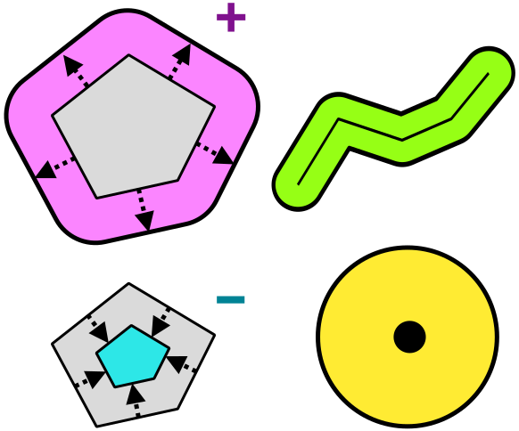

Операции с векторными слоями
Геоинформационные системы. Лекция 6
Операции с атрибутами
Объединение или соединение таблиц позволяет объединить атрибуты из двух таблиц в одну или присоединить атрибуты одних объектов другим.
Пример
Присоединение домам атрибутов объектов сервисов, расположенных в домах
Присоединение статистических данных районам

Источник: Самсонов Т.Е. Основы геоинформатики: курс лекций : сайт. 2025. — URL: https://tsamsonov.github.io/gis-course/. Дата публикации: 24.04.2025. DOI: 10.5281/zenodo.7902351
Ограничивающий прямоугольник
На заметку
В англоязычной или переводной литературе может называться bounding box.
Фактически определяет охват территории по осям координат.
Задается координатами левого нижнего $x_{min},\:y_{min}$ и правого верхнего угла $x_{max},\:y_{max}$.
Дополнительно
Как правило, это часть описания метаданных слоя, но также может использоваться при решении пространственных задач.

Буферные зоны
Буферная зона - это область на карте, каждая точка внутри которой находится в пределах заданного расстояния от исходного объекта.


Пример
Водоохранные зоны
Зоны обслуживания объектов
Объединение объектов по признаку (слияние)
При выполнении этой операции осуществляется слияние объектов с совпадающими значениями атрибута.

Источник: Самсонов Т.Е. Основы геоинформатики: курс лекций : сайт. 2025. — URL: https://tsamsonov.github.io/gis-course/. Дата публикации: 24.04.2025. DOI: 10.5281/zenodo.7902351
Предупреждение
При слиянии объектов атрибуты будут агрегироваться. Как правило, эта операция используется для укрупнени единиц картографирования.
Топологические отношения
Топология - это (от греч. τόπος – место и …логия), раздел математики, связанный с выяснением и исследованием в рамках математики идеи непрерывности3.
Предметом топологии является исследование свойств фигур и их взаимного расположения.
Топологические отношения между объектами можно описать пересечением трех множеств каждого объекта:
Внутреннее множество (𝐴𝑜)
Граничное множество (∂𝐴)
Внешнее множество (𝐴−)

Топологические отношения

Источник: Самсонов Т.Е. Основы геоинформатики: курс лекций : сайт. 2025. — URL: https://tsamsonov.github.io/gis-course/. Дата публикации: 24.04.2025. DOI: 10.5281/zenodo.7902351
Оверлейные операции4
Логические операторы
| Логический оператор | Описание | Графическое описание | Оверлейная операция |
|---|---|---|---|
| AND | Должны быть получены части, которые совпадают для обоих слоев “Какие участки находятся одновременно в зоне ограниченного использования и в жилой зоне?” |
 |
Пересечение (Intersection) |
| NOT | Должны быть получены объекты, которые попадают только в один из двух слоев “Какие участки попадают в зону ограниченного использования, но находятся за пределами жилой зоны?” |
 |
Вырезать (Erase) |
| OR | Результат должен попадать хотя бы в один из слоев “Какие участки находятся или в зоне ограниченного использования или в жилой зоне?” |
 |
Объединение (Union) |
| XOR | Операция противоположная пересечению. “Какие участки находятся или в зоне ограниченного использования или в жилой зоне, но не одновременно?” |
 |
Симметрическая разность (Symmetrical Difference) |
Сноски
Меры расстояния: выбираем наиболее практичные решения https://habr.com/ru/companies/digitalleague/articles/875212/
Самсонов Т.Е. Основы геоинформатики: курс лекций : сайт. 2025. — URL: https://tsamsonov.github.io/gis-course/. Дата публикации: 24.04.2025. DOI: 10.5281/zenodo.7902351
Большая Российская энциклопедия https://bigenc.ru/c/topologiia-6b610e
Cai, H. (2022). Overlay. The Geographic Information Science & Technology Body of Knowledge (1st Quarter 2022 Edition), John P. Wilson (ed.). DOI: 10.22224/gistbok/2022.1.2.